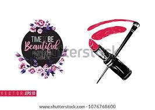
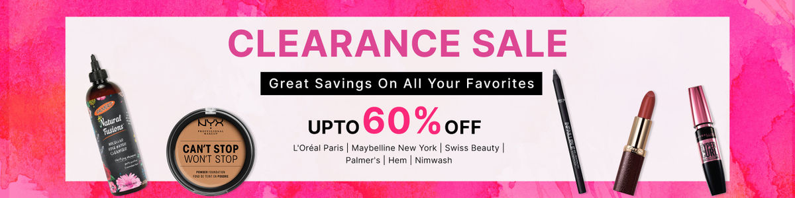

HERE IS ALL MAKE-UP FACILITY AVAILABLE

- HD Makeup
- Airbrush Makeup
- 3D Makeup
- Party Wear Makeup
- Nude Makeup
- Bridal Makeup
We might not realize it at an earlier stage but looking beautiful is something that every bride dreams off.
As wedding is a lifetime experience it is something with which no bride can compromise with it.
Be it unwanted blemishes or dark circles every Indian bride wants to look like a diva on her wedding.
Covering all the unwanted parts professional makeup artists are like a magician who transforms a girl into a young gorgeous bride.
Be it from dewy makeup to giving you the perfect shade and shape of lipstick hiring a popular makeup artist for your nuptial ceremonies and wedding day is surely a wise option to choose because who doesn’t want to look pretty on her wedding photographs and preserve with for a lifetime.
Boosting confidence and enhancing the facial features WMG has over 6000 professional bridal makeup artists and hairstylists who can give you your perfect bridal look.
